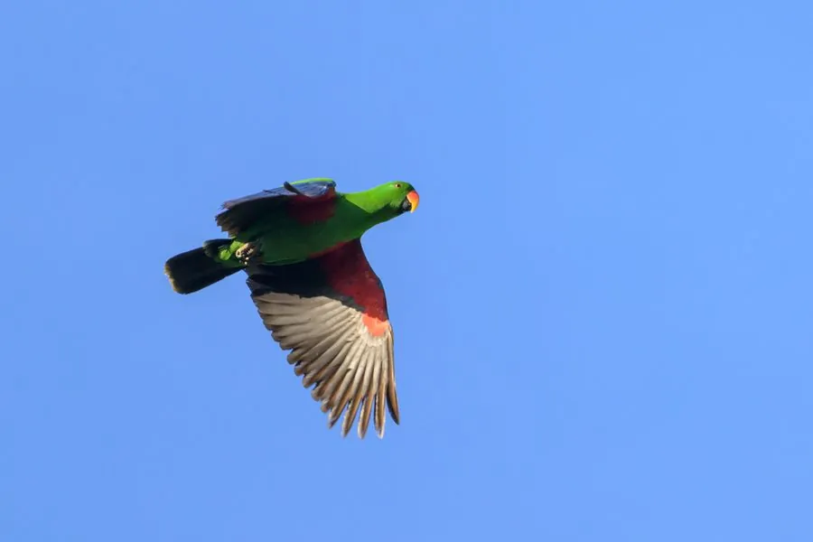

鸟类 · 动物界
折衷鹦鹉 Eclectus roratus

雌雄羽色差异极大的鹦鹉：雄鸟通体翠绿，雌鸟深红配紫蓝。曾因差异太大被误认为两个物种，栖息于新几内亚热带雨林。
- 分类
- 门脊索动物门纲鸟纲目鹦形目科鹦鹉科属折衷鹦鹉属
- 栖息环境
- 低地热带雨林、红树林、林缘与次生林，偏好有高大结果树木的生境。
- 地理分布
- 新几内亚及周边岛屿、所罗门群岛、澳大利亚东北部约克角半岛。
- 保护级别
- IUCN 红色名录列为无危（LC）；列入 CITES 附录二，国际贸易受许可管理。
物种志
折衷鹦鹉体长约三十五至四十二厘米，体重四百至五百五十克。雄鸟通体翠绿色，翼下和尾羽带蓝色，喙橙黄色，虹膜橙红；雌鸟头胸深红色，背部和翼覆羽暗红，胸腹至尾下呈紫蓝色，喙黑色。这种极端的雌雄异色在鹦鹉中十分罕见，早期博物学家曾把雌雄当成两种不同的鸟。脚灰色，尾短而圆。
它栖息于新几内亚、所罗门群岛、澳大利亚东北部的低地雨林、红树林与林缘，多单独或成对在高大树冠层活动，取食果实、花蜜、嫩芽和种子。繁殖期在树洞中营巢，每窝产卵两枚，雌鸟独自孵化和育雏，雄鸟负责外出觅食。折衷鹦鹉的消化道较长，需要高纤维饮食。由于雨林砍伐和宠物贸易捕捉，部分种群数量下降，现列入 CITES 附录二，国际贸易受到严格管理。
形态与习性
- 体长35–42 厘米
- 体重400–550 克
- 食性果实、花蜜、嫩芽与种子
- 繁殖树洞营巢，每窝 2 枚
- 寿命30–50 年
- 保护级别IUCN 无危；CITES 附录二
趣味知识
- 雄鸟翠绿、雌鸟深红，曾被误认为两个不同物种。
- 雌鸟孵卵育雏，雄鸟负责为全家送食。
- 消化道较长，饲养时需要高纤维的果蔬。